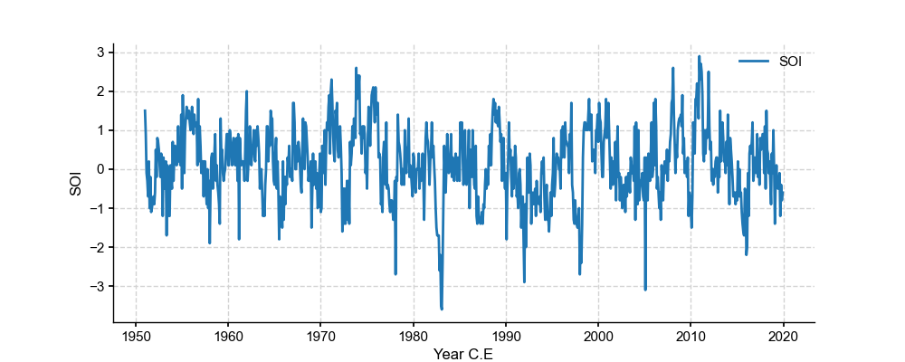
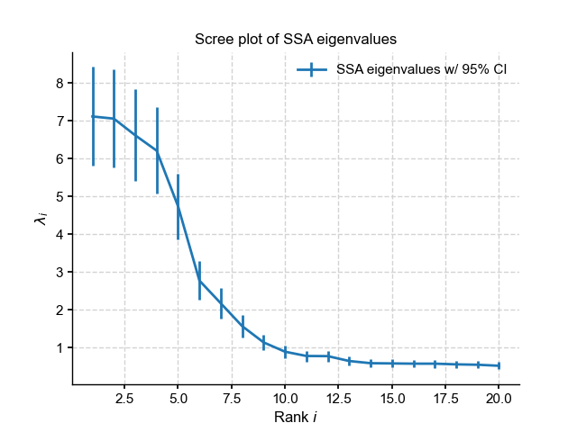
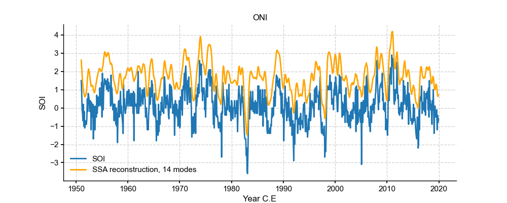
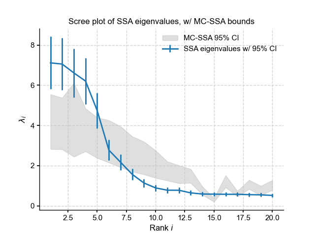

Series.ssa (pyleoclim.core.ui.Series.ssa)¶
-
pyleoclim.core.ui.Series.ssa(self, M=None, nMC=0, f=0.5)¶ Singular Spectrum Analysis
Nonparametric, orthogonal decomposition of timeseries into constituent oscillations. This implementation uses the method of [1], with applications presented in [2]. Optionally (MC>0), the significance of eigenvalues is assessed by Monte-Carlo simulations of an AR(1) model fit to X, using [3]. The method expects regular spacing, but is tolerant to missing values, up to a fraction 0<f<1 (see [4]).
- Parameters
M (int, optional) – window size. The default is None (10% of the length of the series).
MC (int, optional) – Number of iteration in the Monte-Carlo process. The default is 0.
f (float, optional) – maximum allowable fraction of missing values. The default is 0.5.
- Returns
res – Containing:
eig_val : (M, 1) array of eigenvalue spectrum of length r, the number of SSA modes. As in Principal Component Analysis, eigenvaluesare closely related to the fraction of variance accounted for (“explained”, a common but not-so-helpful term) by each mode.
eig_vec : is a matrix of the temporal eigenvectors (T-EOFs), i.e. the temporal patterns that explain most of the variations in the original series.
PC : (N - M + 1, M) array of principal components, i.e. the loadings that, convolved with the T-EOFs, produce the reconstructed components, or RCs
RC : (N, M) array of reconstructed components, One can think of each RC as the contribution of each mode to the timeseries, weighted by their eigenvalue (loosely speaking, their “amplitude”). Summing over all columns of RC recovers the original series. (synthesis, the reciprocal operation of analysis).
eig_val_q : (M, 2) array containing the 5% and 95% quantiles of the Monte-Carlo eigenvalue spectrum [ if MC >0 ]
- Return type
dict
Examples
SSA with SOI
In [1]: import pyleoclim as pyleo In [2]: import pandas as pd In [3]: from matplotlib import pyplot as plt In [4]: data=pd.read_csv('https://raw.githubusercontent.com/LinkedEarth/Pyleoclim_util/Development/example_data/soi_data.csv',skiprows=0,header=1) In [5]: time=data.iloc[:,1] In [6]: value=data.iloc[:,2] In [7]: ts=pyleo.Series(time=time,value=value,time_name='Year C.E', value_name='SOI', label='SOI') #plot In [8]: fig,ax = ts.plot() <Figure size 1000x400 with 1 Axes> In [9]: plt.close(fig) #SSA In [10]: nino_ssa = ts.ssa(M=60)
Let us now see how to make use of all these arrays. The first step is too inspect the eigenvalue spectrum (“scree plot”) to identify remarkable modes. Let us restrict ourselves to the first 40, so we can see something:
In [11]: import matplotlib.pyplot as plt In [12]: import matplotlib.gridspec as gridspec In [13]: import numpy as np In [14]: d = nino_ssa['eig_val'] # extract eigenvalue vector In [15]: M = len(d) # infer window size In [16]: de = d*np.sqrt(2/(M-1)) In [17]: var_pct = d**2/np.sum(d**2)*100 # extract the fraction of variance attributable to each mode # plot eigenvalues In [18]: r = 20 In [19]: rk = np.arange(0,r)+1 In [20]: fig,ax = plt.subplots() In [21]: ax.errorbar(rk,d[:r],yerr=de[:r],label='SSA eigenvalues w/ 95% CI') Out[21]: <ErrorbarContainer object of 3 artists> In [22]: ax.set_title('Scree plot of SSA eigenvalues') Out[22]: Text(0.5, 1.0, 'Scree plot of SSA eigenvalues') In [23]: ax.set_xlabel('Rank $i$'); plt.ylabel(r'$\lambda_i$') Out[23]: Text(0, 0.5, '$\\lambda_i$') In [24]: ax.legend(loc='upper right') Out[24]: <matplotlib.legend.Legend at 0x163fdbe50> In [25]: pyleo.showfig(fig) <Figure size 640x480 with 1 Axes> In [26]: plt.close(fig)
- This highlights a few common phenomena with SSA:
the eigenvalues are in descending order
their uncertainties are proportional to the eigenvalues themselves
the eigenvalues tend to come in pairs : (1,2) (3,4), are all clustered within uncertainties . (5,6) looks like another doublet
around i=15, the eigenvalues appear to reach a floor, and all subsequent eigenvalues explain a very small amount of variance.
So, summing the variance of all modes higher than 19, we get:
In [27]: print(var_pct[15:].sum()*100) 282.301930950568
That is, over 95% of the variance is in the first 15 modes. That is a typical result for a “warm-colored” timeseries, which is most geophysical timeseries; a few modes do the vast majority of the work. That means we can focus our attention on these modes and capture most of the interesting behavior. To see this, let’s use the reconstructed components (RCs), and sum the RC matrix over the first 15 columns:
In [28]: RCk = nino_ssa['RC'][:,:14].sum(axis=1) In [29]: fig, ax = ts.plot(title='ONI',mute=True) # we mute the first call to only get the plot with 2 lines In [30]: ax.plot(time,RCk,label='SSA reconstruction, 14 modes',color='orange') Out[30]: [<matplotlib.lines.Line2D at 0x161f38700>] In [31]: ax.legend() Out[31]: <matplotlib.legend.Legend at 0x161f2da30> In [32]: pyleo.showfig(fig) <Figure size 1000x400 with 1 Axes> In [33]: plt.close(fig)
- Indeed, these first few modes capture the vast majority of the low-frequency behavior, including all the El Niño/La Niña events. What is left (the blue wiggles not captured in the orange curve) are high-frequency oscillations that might be considered “noise” from the standpoint of ENSO dynamics. This illustrates how SSA might be used for filtering a timeseries. One must be careful however:
there was not much rhyme or reason for picking 15 modes. Why not 5, or 39? All we have seen so far is that they gather >95% of the variance, which is by no means a magic number.
there is no guarantee that the first few modes will filter out high-frequency behavior, or at what frequency cutoff they will do so. If you need to cut out specific frequencies, you are better off doing it with a classical filter, like the butterworth filter implemented in Pyleoclim. However, in many instances the choice of a cutoff frequency is itself rather arbitrary. In such cases, SSA provides a principled alternative for generating a version of a timeseries that preserves features and excludes others (i.e, a filter).
as with all orthgonal decompositions, summing over all RCs will recover the original signal within numerical precision.
Monte-Carlo SSA
Selecting meaningful modes in eigenproblems (e.g. EOF analysis) is more art than science. However, one technique stands out: Monte Carlo SSA, introduced by Allen & Smith, (1996) to identiy SSA modes that rise above what one would expect from “red noise”, specifically an AR(1) process_process). To run it, simply provide the parameter MC, ideally with a number of iterations sufficient to get decent statistics. Here’s let’s use MC = 1000. The result will be stored in the eig_val_q array, which has the same length as eig_val, and its two columns contain the 5% and 95% quantiles of the ensemble of MC-SSA eigenvalues.
In [34]: nino_mcssa = ts.ssa(M = 60, nMC=1000)
Now let’s look at the result:
In [35]: d = nino_mcssa['eig_val'] # extract eigenvalue vector In [36]: de = d*np.sqrt(2/(M-1)) In [37]: du = nino_mcssa['eig_val_q'][:,0] # extract upper quantile of MC-SSA eigenvalues In [38]: dl = nino_mcssa['eig_val_q'][:,1] # extract lower quantile of MC-SSA eigenvalues # plot eigenvalues In [39]: rk = np.arange(0,20)+1 In [40]: fig=plt.figure() In [41]: plt.fill_between(rk,dl[:20],du[:20],color='silver',alpha=0.5,label='MC-SSA 95% CI') Out[41]: <matplotlib.collections.PolyCollection at 0x1624d3b80> In [42]: plt.errorbar(rk,d[:20],yerr=de[:20],label='SSA eigenvalues w/ 95% CI') Out[42]: <ErrorbarContainer object of 3 artists> In [43]: plt.title('Scree plot of SSA eigenvalues, w/ MC-SSA bounds') Out[43]: Text(0.5, 1.0, 'Scree plot of SSA eigenvalues, w/ MC-SSA bounds') In [44]: plt.xlabel('Rank $i$'); plt.ylabel(r'$\lambda_i$') Out[44]: Text(0, 0.5, '$\\lambda_i$') In [45]: plt.legend(loc='upper right') Out[45]: <matplotlib.legend.Legend at 0x1624d3a30> In [46]: pyleo.showfig(fig) <Figure size 640x480 with 1 Axes> In [47]: plt.close(fig)
This suggests that modes 1-5 fall above the red noise benchmark.